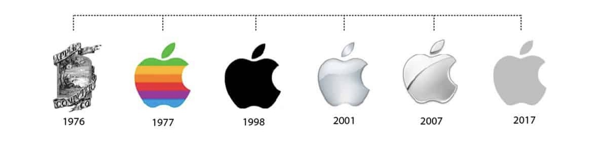

Biography
Born: February 24, 1955
San Francisco, California
American business executive, computer programmer, and entrepreneur
Computer designer and corporate executive Steve Jobs is cofounder of Apple Computers. With his vision of Steve Jobs. Reproduced by permission of the Corbis Corporation. Steve Jobs.
Reproduced by permission of the affordable personal computers, he launched one of the largest industries of the past decades while still in his early twenties. He remains one of the most inventive and energetic minds in American technology.

Early life

He grew up with one sister, Patty. Paul Jobs was a machinist and fixed cars as a hobby. Jobs remembers his father as being very skilled at working with his hands.
In 1961 the family moved to Mountain View, California. This area, just south of Palo Alto, California, was becoming a center for electronics. Electronics form the basic elements of devices such as radios, televisions, stereos, and computers. At that time people started to refer to the area as "Silicon Valley." This is because a substance called silicon is used in the manufacturing of electronic parts.
As a child, Jobs preferred doing things by himself. He swam competitively, but was not interested in team sports or other group activities. He showed an early interest in electronics and gadgetry. He spent a lot of time working in the garage workshop of a neighbor who worked at Hewlett-Packard, an electronics manufacturer.
Jobs also enrolled in the Hewlett-Packard Explorer Club. There he saw engineers demonstrate new products, and he saw his first computer at the age of twelve. He was very impressed, and knew right away that he wanted to work with computers.
Read more about biography...Apple
- Jobs and Steve Wozniak co-founded Apple in 1977, introducing first the Apple I and then the Apple II.
- Apple went public in 1980 with Jobs the blazing visionary and Wozniak the shy genius executing his vision.
- Executive John Scully was added in 1983; in 1985, Apple's board of directors ousted the combative Jobs in favor of Scully.
- Away from Apple, Jobs invested in and developed animation producer Pixar and then founded NeXT to create high-end computers; NeXT eventually led him back to Apple.
- Jobs returned to Apple in the late 1990s and spent the years until his death in 2011 revamping the company, introducing the iPod, iPhone, and iPad, transforming technology and communication in the process.
Why Apple was named Apple?
In Walter Isaacson’s biography, Jobs reveals that he’d come up with the name while “on one of my fruitarian diets.” Having just visited an apple farm he thought the name sounded “fun, spirited and not intimidating.” According to Steve Wozniak: “I remember I was driving Steve Jobs back from the airport along Highway 85. Steve was coming back from a visit to Oregon to a place he called an “apple orchard.” It was actually some kind of commune.
Steve suggested a name – Apple Computer

- 1985 National Medal of Technology (with Steve Wozniak), awarded by US President Ronald Reagan
- 1987 Jefferson Award for Public Service
- 1989 Entrepreneur of the Decade by Inc.
- 1991 Howard Vollum Award from Reed College
- 2004 – 2010 Listed among the Time 100 Most Influential People in the World on five separate occasions
- 2007 Named the most powerful person in business by Fortune magazine
- 2007 Inducted into the California Hall of Fame, located at The California Museum for History, Women and the Arts
- 2012 Grammy Trustees Award, an award for those who have influenced the music industry in areas unrelated to performance
- 2012 Posthumously honored with an Edison Achievement Award for his commitment to innovation throughout his career
- 2013 Posthumously inducted as a Disney Legend
Family
Get to know his kids: Lisa, Reed, Erin and Eve
Powell is the wife of the Steve Jobs; they married in the early 1990’s. She was born on 6th November 1963 in New Jersey. Laurene Powell was a MBA graduate at Stanford business school. She earned B.Sc in Economics from the Wharton School and a B.A from the University of Pennsylvania. Powell is an American business executive and founder of the Emerson Collective. Powell controls and runs the Steven P Jobs Trust. The couple married on March 18, 1991, and lived in Palo Alto, California along with their three children.
Videos
You have to trust in something - your gut, destiny, life, karma, whatever...